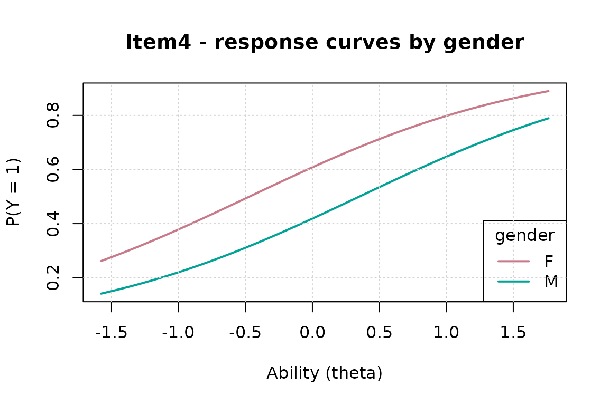

Differential Item Functioning: Screening and Confirmation
Source:vignettes/dif-analysis.Rmd
dif-analysis.RmdWhat DIF is — and what it is not
An item shows differential item functioning when respondents with the same underlying ability but different group membership have different success probabilities. The crucial contrast is with impact: groups may genuinely differ in ability, and that alone is not bias. Every defensible DIF analysis therefore conditions on a matching criterion, and the central methodological risk is that the criterion itself is contaminated by the DIF items.
gllammr implements a two-stage workflow:
-
dif_test()— fast logistic-regression screening with iterative purification, supporting multiple DIF variables and interactions. -
dif_irt()— confirmatory likelihood-ratio tests inside the joint IRT model, with a latent-regression impact term.
Simulated example: two factors, one intersectional item
1,500 respondents crossed by gender and language; 12 items. Item 4 is biased against one gender, item 8 against one language group, and item 11 only against the combination (intersectional DIF).
library(gllammr)
#>
#> Attaching package: 'gllammr'
#> The following object is masked from 'package:stats':
#>
#> binomial
set.seed(2026)
n <- 1000; ni <- 12
persons <- data.frame(
gender = factor(sample(c("F", "M"), n, TRUE)),
lang = factor(sample(c("majority", "minority"), n, TRUE)))
theta <- rnorm(n) - 0.4 * (persons$lang == "minority") # impact!
b <- seq(-1.5, 1.5, length.out = ni)
resp <- sapply(seq_len(ni), function(j) {
eta <- theta - b[j]
if (j == 4) eta <- eta - 0.8 * (persons$gender == "M")
if (j == 8) eta <- eta - 0.8 * (persons$lang == "minority")
if (j == 11) eta <- eta - 1.0 * (persons$gender == "M") *
(persons$lang == "minority")
rbinom(n, 1, plogis(eta))
})Note the design includes impact (the minority-language group has a lower latent mean), which a sound analysis must not mistake for DIF.
Stage 1: screening with dif_test()
The formula interface carries both factors and their interaction; each item gets a joint likelihood-ratio test against the matched criterion (latent EAP score by default), with purification on:
screen <- dif_test(resp, dif = ~ gender * lang, person_data = persons)
print(screen)
#> Differential Item Functioning (DIF) Analysis
#> ==============================================
#>
#> DIF specification: ~gender * lang ( 3 term(s) )
#> Matching: latent (2PL EAP) | Type: both
#> Purification: 2 iteration(s), converged
#> Items tested: 12 | flagged: 4 (alpha = 0.05 )
#>
#> Flagged items:
#> item name chisq df p_value p_adj delta_R2 classification flagged
#> 3 Item3 16.1108 6 0.0132 0.0132 0.0201 A TRUE
#> 4 Item4 31.2508 6 0.0000 0.0000 0.0375 B TRUE
#> 8 Item8 36.6802 6 0.0000 0.0000 0.0459 B TRUE
#> 11 Item11 39.2483 6 0.0000 0.0000 0.0554 B TRUEAll three DIF items — including the purely intersectional item 11, which no single-factor analysis could attribute correctly — are flagged, with Nagelkerke effect sizes and the Jodoin–Gierl A/B/C labels. The purification trace shows the matching criterion was re-derived after flagging, so the biased items no longer contaminate it.
Response curves for any flagged item, by any factor:
dif_plot(screen, item = 4, by = "gender")
Two practical options worth knowing: p_adjust = "BH"
controls the false discovery rate across items, and
match = "score" switches to the classical observed-score
criterion (with which the results reproduce
difR::difLogistic exactly).
Stage 2: confirmation with dif_irt()
Screening conditions on an estimated score. The confirmatory model puts DIF inside the joint marginal-likelihood IRT model: item-by- covariate interactions for the studied items, plus a latent regression that absorbs impact. Anchoring on the screened-clean items:
confirm <- dif_irt(resp, dif = ~ gender * lang, person_data = persons,
items = screen$flagged_items,
anchors = setdiff(seq_len(ni), screen$flagged_items))
print(confirm)
#> Confirmatory IRT DIF analysis (Rasch, uniform DIF, LR tests)
#> DIF specification: ~gender * lang
#> Anchors: 1, 2, 5, 6, 7, 9, 10, 12
#>
#> Impact (latent regression of ability on the DIF variables):
#> term gamma se z
#> genderM -0.1384 0.1075 -1.2871
#> langminority -0.4337 0.1121 -3.8670
#> genderM:langminority 0.2724 0.1547 1.7606
#>
#> Items flagged: 4, 8, 11 (alpha = 0.05 )
#> item name chisq df p_value p_adj flagged delta_genderM delta_langminority
#> 3 Item3 7.1750 3 0.0665 0.0665 FALSE 0.5442 0.1089
#> 4 Item4 31.0143 3 0.0000 0.0000 TRUE -0.7982 0.2075
#> 8 Item8 19.7072 3 0.0002 0.0002 TRUE 0.1093 -0.5467
#> 11 Item11 21.9010 3 0.0001 0.0001 TRUE 0.0216 -0.1503
#> delta_genderM.langminority
#> -0.4323
#> 0.0606
#> -0.2618
#> -0.9945Two things to read off. First, the impact block: the latent regression recovers the minority-language ability difference as a group mean difference — not as item bias. Second, each confirmed item’s estimates are on the logit metric with standard errors: the size of the bias at equal ability, ready to report.
For the Rasch model these tests are likelihood-identical to the De
Boeck & Wilson long-format GLMM
(y ~ 0 + item + z + item_j:z + (1 | person)); the package
validates this against lme4 to three decimals.
Why two stages
The screening test is fast (one small regression per item per round)
and robust as an exploratory sweep, but its matching criterion — however
purified — is an estimate, and with heavy, same-direction DIF the
DIF/impact decomposition can become unidentified (in that case
dif_test() warns explicitly rather than returning confident
nonsense). The confirmatory model handles impact by construction, gives
effect sizes with standard errors in the latent metric, and supports
nonuniform DIF for the 2PL (type = "both"); its cost is one
IRT fit per studied item. Screen wide, confirm narrow.
Polytomous items and purification breakdown
dif_test() handles polytomous items via cumulative-logit
regression automatically. And if purification ever removes (almost)
every item from the anchor — the signature of a test where too large a
fraction shares same-direction DIF — the analysis warns that substantive
anchor knowledge is required; supply known-clean anchors
and re-run.
References
- Swaminathan, H., & Rogers, H. J. (1990). Detecting differential item functioning using logistic regression procedures. Journal of Educational Measurement, 27, 361–370.
- Thissen, D., Steinberg, L., & Wainer, H. (1993). Detection of differential item functioning using the parameters of item response models. In Differential Item Functioning. Erlbaum.
- Candell, G. L., & Drasgow, F. (1988). An iterative procedure for linking metrics and assessing item bias in item response theory. Applied Psychological Measurement, 12, 253–260.
- Jodoin, M. G., & Gierl, M. J. (2001). Evaluating type I error and power rates using an effect size measure with the logistic regression procedure for DIF detection. Applied Measurement in Education, 14, 329–349.